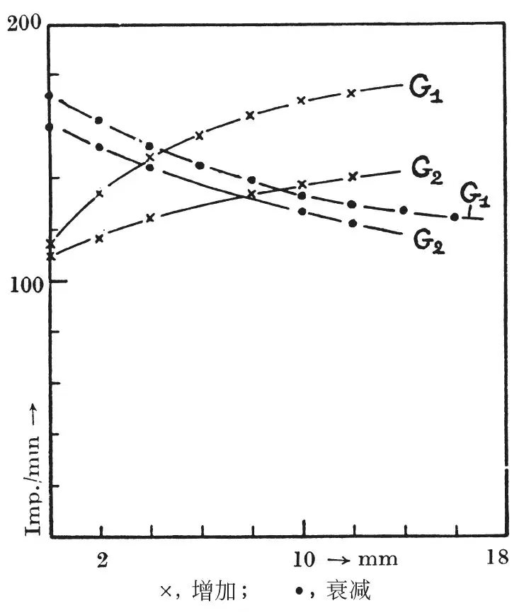
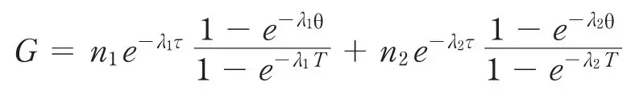
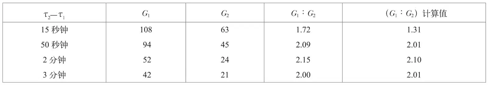

英文
英文维腾斯坦
编者按
核裂变的发现及其释放的巨大能量显示了将这种能量用于武器和工业的可能性。但是科学家对它的许多基本的过程仍了解很少，这可能影响到对它的成功工程化。物理学家卢德维克·维腾斯坦从最近被纳粹德国占领的波兰写出的信中指出，裂变过程产生放射性气体。他探测到在中子轰击铀样品周围几种气体循环引入的放射性，并发现两种截然不同的放射性组分的踪迹，它们的半衰期分别为30秒钟和4分钟。这仅仅是将核能引入工程应用详细研究的必要开端。 英文
这封信对铀核裂变中放出放射性气体研究的初步结果进行了简要地说明。这项工作原计划于今年夏天开始着手，但是因二战的爆发而中断。尽管到目前为止我们所得到的结果并不比其他研究者在此期间所得到的结果[1]更为完善，但我们采用了一种稍为不同的研究方法，而描述该方法可能也是很有趣的。 英文
裂变过程中放出的放射性气体依次流经放置好的两套盖革–米勒计数器，被其中无放射性气体环流携带出来。利用一套平行放置且装有活栓的不同孔径的毛细玻璃管构成的系统，可以对两套计数器内气体到达的时间延迟在很宽的限度内进行调节。时间延迟的长短可以通过锕射气或钍射气循环的分立实验来确定。实验中我们使用10毫米汞柱压强的丙酮作为载气，因为它具有有利于计数器正常运转的性质。气体循环是通过瓦尔莫玻璃泵来维持的。 英文
将盛有大约30克氧化铀（U2O3）的容器用石蜡包围起来，并提供一个很容易引入和取走中子源的井，中子源由大约30毫克氡和铍组成。实验过程中，在照射开始或停止之后的一段时间，记录两台计数器的计数率。附图中显示了两计数器间的时间延迟为15秒钟时得到的典型结果，从图中我们可以看到，所得到的增长和衰减曲线几乎是互补的，并且展现出若干个周期（其中一些的数量级为分钟，另外一些则明显要长很多），这些在实验期间引起了几乎恒定的剩余放射性。 英文

我们根据分立实验中得到的衰减曲线估算了较短的周期。实验中，气体的流动随着移开中子源而同时停止，在此之后对两台计数器的记录结果简单相加。这给出了约为30秒钟和4分钟的两个周期，产生相应气体的速率的比值的估算值为1.82。（格拉索和斯泰格曼（见上述参考文献）发现铀裂变的两种气体产物周期分别为30秒钟和5分钟，其中第一种转变为一种周期为3分钟的产物。我们在实验中发现的周期为4分钟的产物有可能是3分钟和5分钟周期结合的结果。） 英文
对上述估算的检验可以通过如下方式获得：通过在环路中插入不同的毛细管，获得各种环流周期，对具有这些周期的稳定流动计算两台计数器计数率的比值，并将计算所得的数值与辐射开始12分钟后测得的数值相比较。这一时间间隔对于完全建立平衡来说不是很充足，不过从另一方面来说，它与长寿命衰变产物的周期相比却已足够短，这足以确定所获得的值在任何可观程度上都不依赖于这些产物的形成。 英文
假设放射性气体仅由衰变常数分别为λ1和λ2、生成速率分别为每秒n1和n2个原子的两种短周期成分组成，其任一台计数器中的计数率都可以很容易由下列式子给出：

式中，τ表示循环气体从盛铀容器到达我们正在讨论的计数器所需的时间，θ表示气体流过计数器所需的时间，T表示整个循环过程的周期。 英文
下面的表格中记录了两台计数器的计数率G1和G2，其中，G1和G2是在辐照开始12分钟后，两台计数器对相应于表中第一栏所列出的两个计数器之间的时间延迟τ2–τ1的四个毛细管进行计数所得结果。 英文

我们可以看到，除了对于最快的循环之外，实验值和计算值之比G1∶G2符合得相当好，这是因为对于最快的循环计算值主要依赖于较短的周期和短时间延迟，所以由此确定的结果精确性最差。 英文
（王耀杨 翻译；张焕乔 审稿）